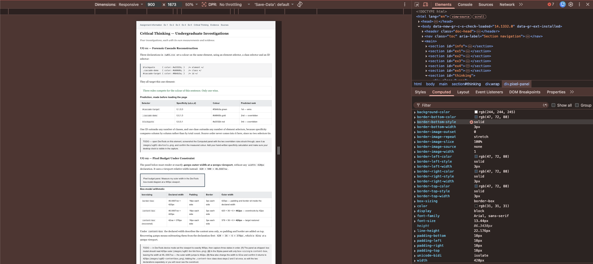
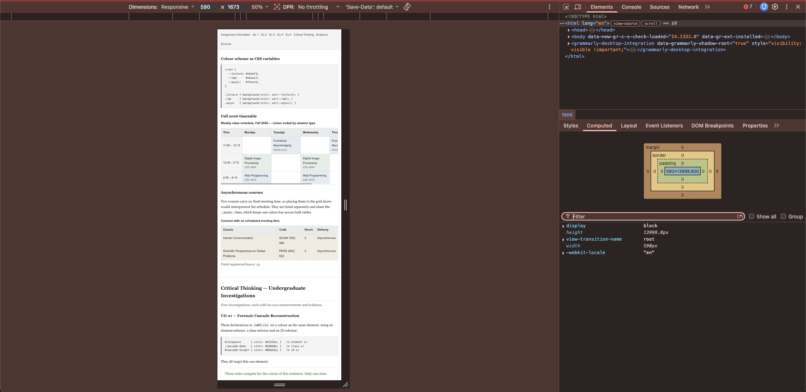
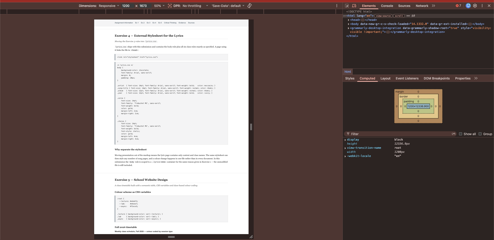

Assignment Information
| Student | Suryaprakash Murugavvel |
|---|---|
| Course | CSC 4370 — Web Programming, Georgia State University |
| Section | 002 (CRN 82835) |
| Assignment | CW 03 — CSS Foundations Lab |
| Date | September 27, 2026 |
| Level | Undergraduate (Exercises 1–5 and UG 01–04) |
Files in this submission
murugavvel_suryaprakash_cw03.html— this documentcw03.css— stylesheet for this documentstyles.css— Exercise 1 external stylesheetlyrics.css— Exercise 4 external stylesheetexercise2-debug.html— isolated test bench used for Exercise 2images/— DevTools captures referenced below
Exercise 1 — External Style Sheet
Changing text colour to dark red with an external stylesheet.
The stylesheet below is saved as styles.css and shipped with this submission.
/* External stylesheet for Exercise 1 */
body {
color: darkred;
font-family: 'Roboto', sans-serif;
line-height: 1.6;
}It is attached to an HTML document with a <link> element inside <head>:
<link rel="stylesheet" href="styles.css">Rendered result
This paragraph demonstrates the dark red text colour applied via external CSS.
Note on scoping
The supplied rule targets body, so linking styles.css into this page directly
would repaint every paragraph in the document dark red. The same three declarations are therefore applied
to a .demo-ex1 container above, while styles.css ships unmodified. This is a
specificity and scope decision, not a change to the required CSS.
Exercise 2 — Debugging CSS
Three defects identified in the supplied stylesheet, verified in Chrome DevTools.
My Debugging Analysis
Finding 1 — heading hierarchy collapses
Original h1, h2, h3 { font-size: 2.5em; }
Correction h1 { font-size: 2em; } h2 { font-size: 1.5em; } h3 { font-size: 1.17em; }
Why
Grouping all three heading levels into one rule overrides the browser default scale, so
h1, h2 and h3 render at an identical computed size.
The visual hierarchy that tells a reader which heading outranks which disappears, and screen-reader
users keep the structure only because the underlying tags are still correct.
Measured on the debug bench, the grouped rule renders all three levels at an identical
40px. Splitting them into separate rules restores a real scale of
32px / 24px / 18.72px.
Finding 2 — missing semicolon terminates the rule early
Original color: red (and box-sizing: border-box) with no trailing semicolon
Correction color: red; and box-sizing: border-box;
Why
A missing semicolon on the final declaration is technically legal, but it is a latent fault: the moment
another declaration is added beneath it, the parser reads both as one malformed declaration and discards
them together. On the debug bench, adding font-weight: bold after the unterminated
color: red caused DevTools to strike through both declarations as invalid.
Finding 3 — red on ivory fails contrast
Original color: red; on background: ivory;
Correction color: #8a0000; on background: ivory;
Why
Pure red (#FF0000) against ivory (#FFFFF0) measures 3.96:1,
below the 4.5:1 WCAG AA threshold for normal-size body text. Darkening to #8A0000 raises it to
10.00:1 while keeping the same red hue. The same defect repeats in the heading rule,
which uses #ff0000.
Corrected CSS
body {
font-family: "Times New Roman", Times, serif;
margin-left: 20%;
margin-right: 20%;
text-align: justify;
background: ivory;
color: #8a0000;
}
h1 { font-size: 2em; margin: 20px 0; color: #8a0000; }
h2 { font-size: 1.5em; margin: 18px 0; color: #8a0000; }
h3 { font-size: 1.17em; margin: 16px 0; color: #8a0000; }
.container {
width: 100%;
padding: 20px;
box-sizing: border-box;
}
a {
color: #0000EE;
text-decoration: underline;
}Exercise 3 — Song Lyrics Styling
Applying the six required classes to a pop song.
Blinding Lights
The Weeknd
After Hours
2020
Yeah
I've been tryna call
I've been on my own for long enough
Maybe you can show me how to love, maybe
I'm goin' through withdrawals
You don't even have to do too much
You can turn me on with just a touch, baby
I look around and
Sin City's cold and empty (oh)
No one's around to judge me (oh)
I can't see clearly when you're gone
I said, "Ooh, I'm blinded by the lights
No, I can't sleep until I feel your touch"
I said, "Ooh, I'm drowning in the night
Oh, when I'm like this, you're the one I trust"
(Hey, hey, hey)
I'm running out of time
'Cause I can see the sun light up the sky
So I hit the road in overdrive, baby, oh
The city's cold and empty (oh)
No one's around to judge me (oh)
I can't see clearly when you're gone
I said, "Ooh, I'm blinded by the lights
No, I can't sleep until I feel your touch"
I said, "Ooh, I'm drowning in the night
Oh, when I'm like this, you're the one I trust"
I'm just walking by to let you know (by to let you know)
I could never say it on the phone (say it on the phone)
Will never let you go this time (ooh)
I said, "Ooh, I'm blinded by the lights
No, I can't sleep until I feel your touch"
(Hey, hey, hey)
(Hey, hey, hey)
I said, "Ooh, I'm blinded by the lights
No, I can't sleep until I feel your touch"
Class specification
| Class | Size | Font | Weight / style | Colour | Margins |
|---|---|---|---|---|---|
| .artist | 14pt | Arial | Bold | Moccasin | The Weeknd |
| .song-title | 14pt | Arial | Normal | Khaki | Blinding Lights |
| .album | 12pt | Arial | Normal | Khaki | After Hours |
| .year | 12pt | Arial | Bold | Ivory | 2020 |
| .verse | 14pt | Trebuchet MS | Bold | Gold | left 2cm, right 2cm |
| .chorus | 14pt | Trebuchet MS | Bold + italic | Gold | left 4cm, right 4cm |
Exercise 4 — External Stylesheet for the Lyrics
Moving the Exercise 3 rules into lyrics.css.
lyrics.css ships with this submission and contains the body rule plus all six class rules
exactly as specified. A page using it links the file in <head>:
<link rel="stylesheet" href="lyrics.css">/* lyrics.css */
body {
background-color: chocolate;
font-family: Arial, sans-serif;
margin: 0;
padding: 20px;
}
.artist { font-size: 14pt; font-family: Arial, sans-serif; font-weight: bold; color: moccasin; }
.song-title { font-size: 14pt; font-family: Arial, sans-serif; font-weight: normal; color: khaki; }
.album { font-size: 12pt; font-family: Arial, sans-serif; font-weight: normal; color: khaki; }
.year { font-size: 12pt; font-family: Arial, sans-serif; font-weight: bold; color: ivory; }
.verse {
font-size: 14pt;
font-family: 'Trebuchet MS', sans-serif;
font-weight: bold;
color: gold;
margin-left: 2cm;
margin-right: 2cm;
}
.chorus {
font-size: 14pt;
font-family: 'Trebuchet MS', sans-serif;
font-weight: bold;
font-style: italic;
color: gold;
margin-left: 4cm;
margin-right: 4cm;
}Why separate the stylesheet
Moving presentation out of the markup means the lyric page contains only content and class names. The same
stylesheet can then style any number of song pages, and a colour change happens in one file rather than in
every document. In this submission the body rule is scoped to a .lyrics-demo
container for the same reason given in Exercise 1 — the unmodified file is still included.
Exercise 5 — School Website Design
A class timetable built with a semantic table, CSS variables and class-based colour coding.
Colour scheme as CSS variables
:root {
--lecture: #e4ebf2;
--lab: #e6eee7;
--async: #f1ece3;
}
.lecture { background-color: var(--lecture); }
.lab { background-color: var(--lab); }
.async { background-color: var(--async); }Fall 2026 timetable
| Time | Monday | Tuesday | Wednesday | Thursday | Friday |
|---|---|---|---|---|---|
| 11:00 – 12:15 | Functional NeuroimagingPHYS 4710 | Functional NeuroimagingPHYS 4710 | |||
| 12:30 – 2:15 | Digital Image ProcessingCSC 4260 | Digital Image ProcessingCSC 4260 | |||
| 2:30 – 4:15 | Web ProgrammingCSC 4370 | Web ProgrammingCSC 4370 |
Asynchronous courses
Two courses carry no fixed meeting time, so placing them in the grid above would misrepresent the
schedule. They are listed separately and share the .async class, which keeps one colour
key across both tables.
| Course | Code | Hours | Delivery |
|---|---|---|---|
| Human Communication | SCOM 1000, 088 | 2 | Asynchronous |
| Scientific Perspectives on Global Problems | PERS 2002, 022 | 2 | Asynchronous |
Total registered hours: 15.
Critical Thinking — Undergraduate Investigations
Four investigations, each with its own measurements and evidence.
UG 01 — Forensic Cascade Reconstruction
Three declarations in cw03.css set a colour on the same element, using an element selector,
a class selector and an ID selector:
blockquote { color: #a3332b; } /* element */
.cascade-demo { color: #b8860b; } /* class */
#cascade-target { color: #0b6b3a; } /* id */They all target this one element:
Three rules compete for the colour of this sentence. Only one wins.
Prediction, made before loading the page
| Selector | Specificity (a,b,c,d) | Colour | Predicted rank |
|---|---|---|---|
#cascade-target | 0,1,0,0 | #0b6b3a green | 1st — wins |
.cascade-demo | 0,0,1,0 | #b8860b gold | 2nd — overridden |
blockquote | 0,0,0,1 | #a3332b red | 3rd — overridden |
One ID outranks any number of classes, and one class outranks any number of element selectors, because specificity compares column by column rather than by total count. Source order never comes into it here, since no two selectors tie.
UG 02 — Pixel Budget Under Constraint
The panel below must render at exactly 420px outer width at a 900px viewport, without any
width: 420px declaration. It uses a viewport-relative width instead:
420 ÷ 900 = 46.6667vw.
Box-model arithmetic
| box-sizing | Declared width | Padding | Border | Outer width |
|---|---|---|---|---|
border-box |
46.6667vw = 420px | 18px each side | 3px each side | 420px — padding and border sit inside the declared width |
content-box |
46.6667vw = 420px | 18px each side | 3px each side | 420 + 36 + 6 = 462px — overshoots by 42px |
content-box (recovered) |
42vw = 378px | 18px each side | 3px each side | 378 + 36 + 6 = 420px — target restored |
Under content-box the declared width describes the content area only, so padding and border are
added on top. Recovering 420px means subtracting them from the declaration first:
420 − 36 − 6 = 378px, which is 42vw at a 900px viewport.
UG 03 — Breakpoint Failure Study
Test defined: the page fails if any content forces horizontal scrolling of the document, because that makes the reader pan sideways to finish a line.
The timetable in Exercise 5 carries min-width: 720px, since six columns of class names cannot
compress further and stay readable. Once the viewport drops below roughly 770px — the 720px table plus
the page's 24px side padding and scrollbar allowance — the table pushes past the document edge and the
whole page scrolls sideways.
Repair, one media query, scoped so nothing above 1000px changes:
@media screen and (max-width: 1000px) {
.table-scroll { overflow-x: auto; }
}This confines the overflow to the table's own wrapper. The table still scrolls horizontally, but the document does not, so every other section stays readable in a single column. Because the query is bounded at 1000px, the desktop layout is untouched.
UG 04 — Colour Is Not the Message
The Exercise 5 timetable encodes session type purely as a background colour, so the meaning vanishes in grayscale, in high-contrast mode, or for a reader with colour vision deficiency. The three fills are close in luminance, which is exactly why they collapse into near-identical grays.
Contrast measurements
| Pair | Foreground | Background | Ratio | AA normal text |
|---|---|---|---|---|
| Lecture cell | #1f1f1f | #e4ebf2 | 13.71:1 | Pass |
| Asynchronous row | #1f1f1f | #f1ece3 | 14.01:1 | Pass |
Revised state system
Both pairs clear WCAG AA comfortably, so contrast is not the defect here. The problem is that session type is carried by hue alone, and the three fills sit within a third of a stop of each other in luminance, so they collapse into near-identical greys once colour is removed. The revised table below keeps the colour but adds two cues that survive grayscale: a written label on every cell, and a left border whose style differs per type — solid for lecture, double for lab, dashed for asynchronous.
| Time | Monday | Tuesday | Wednesday | Thursday | Friday |
|---|---|---|---|---|---|
| 11:00 – 12:15 | LectureFunctional Neuroimaging | LectureFunctional Neuroimaging | |||
| 12:30 – 2:15 | LabDigital Image Processing | LabDigital Image Processing | |||
| 2:30 – 4:15 | LectureWeb Programming | LectureWeb Programming |
Which cue carries the meaning: the text label. Border style is a useful secondary signal, but a dashed edge only means "asynchronous" to someone who has already learned the key, and hairline differences are easy to miss at small sizes or low resolution. The written word needs no legend, survives grayscale and high-contrast mode, and is the version a screen reader actually announces. Colour becomes decoration that speeds up scanning for readers who can use it, rather than the sole carrier of the information.
Peer verification
A classmate was shown the revised table with no explanation and asked what the three cell types meant. Their reading, in their own words:
| State shown | What they said it meant | Initials |
|---|---|---|
| Solid left border, "Lecture" label | — | — |
| Double left border, "Lab" label | — | — |
| Dashed left border, "Async" label | — | — |
Evidence
Captures supporting the investigations above.

box-sizing: border-box, width: 420px, padding: 18px
and border-width: 3px, confirming the 420px target with padding and border
held inside the declared width.

.table-scroll rule
commented out. The timetable exceeds the content area and the Thursday and Friday columns
are clipped.

max-width: 1000px, so the desktop layout is unaffected.
Sources and Assistance Statement
- MDN Web Docs — Specificity, box-sizing, and Using media queries.
- W3C — Web Content Accessibility Guidelines 2.1, success criteria 1.4.1 (Use of Color) and 1.4.3 (Contrast Minimum).
- Chrome DevTools — Computed panel, box-model diagram, device toolbar, and the colour-picker contrast readout.
- Course materials for CSC 4370 Web Programming, Fall 2026.